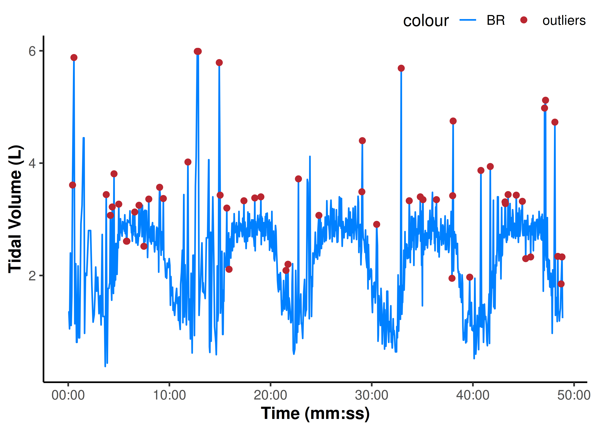
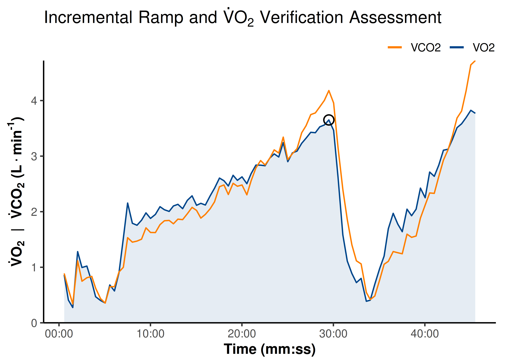
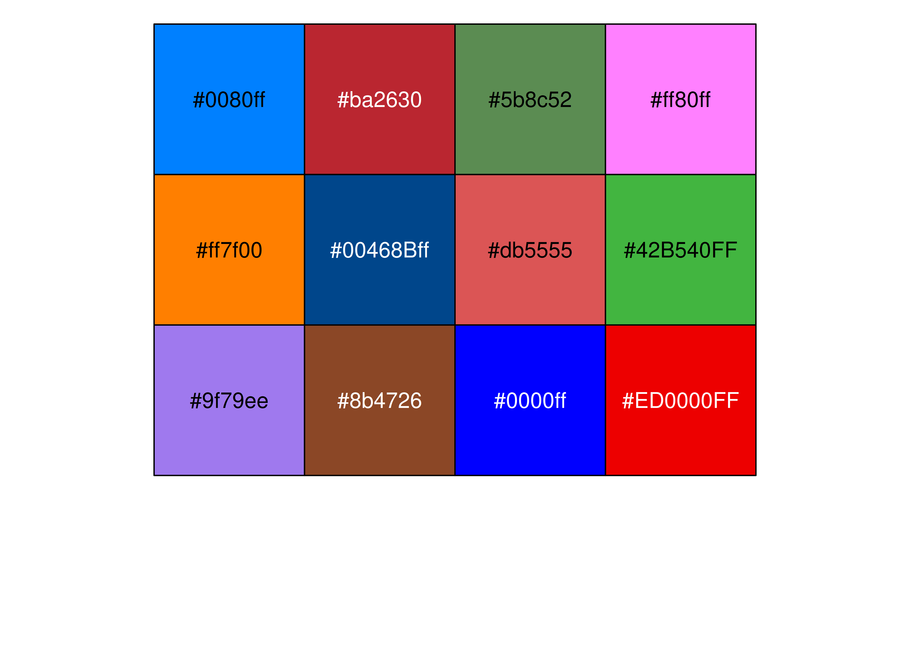

Reading and Cleaning Data
Often the first common task we have to do is read our data from a file exported from one of our lab devices into R. This package has a few functions to make that task a bit easier.
In this vignette we will learn:
To read files exported from Parvo Medics TrueOne 2400 metabolic cart and Tymewear Vital Pro ventilation chest strap with
read_parvo()andread_tymewear(), respectively.To detect and replace local outlier values in metabolic data with
replace_outliers().Plotting functions for pretty data visualision with
theme_epl(),palette_epl(), and other ggplot2 helper functions.To perform digital filtering of metabolic data
<under development as of 0.2.0>.To calculate peak values (e.g. V̇O2peak)
<under development as of 0.2.0>.
{epl} 0.2.0 internal release notes:
More functions will be added to this vignette as they are included in {epl}.
First we will set up our R environment by calling the package libraries we will use.
Specify file path
There are a few ways to point to our data file. If our data files and R script are in the same root folder (or Rstudio project folder), then we should be able to use an implicit file path, e.g.: "./raw_data/my_file.csv".
If the data file is elsewhere, we will need to define the full path explicitly, e.g.:
file.path("~", "my_folder", "raw_data", "my_file.csv")
#> [1] "~/my_folder/raw_data/my_file.csv"
example_epl()
{epl} includes example data files which can be used to test the included functions:
## calling `example_epl()` will return a list of all included example files
example_epl()
#> [1] "parvo_binned.CSV" "parvo_bxb.CSV" "parvo_ramp.CSV"
#> [4] "tymewear_live.csv" "tymewear_post.csv"
## partial matching will error if matches multiple
example_epl("parvo")
#> Error in `example_epl()`:
#> ! Multiple files match "parvo":
#> ℹ Matching files: "parvo_binned.CSV", "parvo_bxb.CSV", and "parvo_ramp.CSV"
## calling a specific file by name will return the file path
## partial string matching works for uniquely identifiable file names
file_path <- example_epl("parvo_binned")
file_path
#> [1] "C:/Program Files/R/R-4.5.1/library/epl/extdata/parvo_binned.csv"Reading file data
read_parvo()
This function will read .CSV or .xlsx (but not .XLS) files exported by Parvo Medics TrueOne 2400 metabolic cart.
read_parvo()won’t work on exported .XSL dataThe exported .XSL file format is obsolete and cannot be easily read into R. These files will need to be re-saved as .xlsx before being read. We recommend exporting as .CSV for this reason.
read_parvo() has two simple arguments:
file_path: takes in the character string for our data file path, as we defined above.add_timestamp: gives the option to add a timestamp (time of day) column indatetimeformat based on the file recording start time. The file start time is accurate to the nearest second (± 0.5 sec precision) as long as the Parvo system time was accurate in the first place. Which is not always true.
The output of this function is a list of three data frames:
parvo$data: contains the recorded raw data samples for exported data channels (e.g.c("VO2", "VCO2", "RR", "Vt")) and calculated metabolic values (e.g.c("O2kJ", "O2kcal", "Paer", "METS"); see?read_parvofor details on calculated values).parvo$details: contains the file details & metadata, includingc("Date", "Name", "Sex", "Age")(metric SI units only).parvo$events: contains any manually entered events with time in seconds and event descriptions.
parvo <- read_parvo(file_path = file_path, add_timestamp = TRUE)
parvo
#> $data
#> # A tibble: 179 × 26
#> TIME timestamp HR VO2kg VO2 VCO2 RER RR Vt VE
#> <dbl> <dttm> <dbl> <dbl> <dbl> <dbl> <dbl> <dbl> <dbl> <dbl>
#> 1 18.1 2025-10-23 10:50:23 0 5.69 0.404 0.419 1.04 13.3 1.11 12.1
#> 2 31.5 2025-10-23 10:50:36 0 6.80 0.483 0.484 1.00 17.8 0.993 14.5
#> 3 49.5 2025-10-23 10:50:54 107 6.08 0.432 0.448 1.04 10.0 1.66 13.6
#> 4 62.5 2025-10-23 10:51:07 107 4.06 0.288 0.321 1.11 13.8 0.816 9.27
#> 5 77.5 2025-10-23 10:51:22 107 8.61 0.611 0.648 1.06 16.0 1.28 16.8
#> 6 94.9 2025-10-23 10:51:39 107 7.52 0.534 0.528 0.990 13.8 1.15 13.0
#> 7 107. 2025-10-23 10:51:51 107 6.80 0.483 0.514 1.06 15.0 1.10 13.6
#> 8 123. 2025-10-23 10:52:08 107 5.94 0.422 0.454 1.08 11.2 1.33 12.2
#> 9 138. 2025-10-23 10:52:23 107 2.47 0.175 0.186 1.06 16.0 0.392 5.13
#> 10 153. 2025-10-23 10:52:37 107 3.92 0.278 0.294 1.06 12.1 0.845 8.42
#> # ℹ 169 more rows
#> # ℹ 16 more variables: VEVO2 <dbl>, VEVCO2 <dbl>, FEO2 <dbl>, FECO2 <dbl>,
#> # FATmin <dbl>, CHOmin <dbl>, Breath <dbl>, FatOx <dbl>, CarbOx <dbl>,
#> # O2kJ <dbl>, O2kcal <dbl>, O2work <dbl>, O2energy <dbl>, O2power <dbl>,
#> # O2pulse <dbl>, METS <dbl>
#>
#> $details
#> # A tibble: 1 × 16
#> Date Name Sex Age Height Weight `Insp. temp` `Baro. pressure`
#> <chr> <chr> <chr> <dbl> <dbl> <dbl> <dbl> <dbl>
#> 1 2025-10-23 10:5… TW02 Male 0 176 71 23.6 755.
#> # ℹ 8 more variables: `Insp. humidity` <dbl>, `STPD to BTPS` <dbl>,
#> # `O2 Gain` <dbl>, `CO2 Gain` <dbl>, `Base O2` <dbl>, `Base CO2` <dbl>,
#> # `Measured O2` <dbl>, `Measured CO2` <dbl>
#>
#> $events
#> # A tibble: 23 × 2
#> TIME Events
#> <dbl> <chr>
#> 1 240 Start Exercise
#> 2 240 UP1 265W
#> 3 540 Stop Exercise
#> 4 540 Cadence 95
#> 5 900 Start Exercise
#> 6 900 RP2 265W
#> 7 1200 Stop Exercise
#> 8 1200 RPE 6-20 15
#> 9 1200 Cadence 95
#> 10 1440 Start Exercise
#> # ℹ 13 more rows
read_tymewear()
This function will read “Live Processed CSV” or “Post Processed CSV” files exported from Tymewear VitalPro chest strap.
read_tymewear() only has one argument:
-
file_path: as above, the character string for our file path.
The output of this function is a list of two data frames:
tyme$data: contains the recorded raw data samples for breathing rate, tidal volume, and ventilation:c("br", "vt", "ve"), with time in seconds and timestamps indatetimeformat.tyme$details: contains the file details & metadata, includingc("gender", "weight", "date", "app-start-time"). It is in “long” format, whereas the parvo details are in “wide” format.
tymelive <- read_tymewear(example_epl("tymewear_live"))
tymelive
#> $data
#> # A tibble: 1,083 × 5
#> time timestamp br vt ve
#> <dbl> <dttm> <dbl> <dbl> <dbl>
#> 1 0 2025-10-23 10:50:11 12.7 1.35 17
#> 2 4.14 2025-10-23 10:50:15 14.9 1.35 20
#> 3 7.95 2025-10-23 10:50:18 15 1.05 16
#> 4 13.0 2025-10-23 10:50:24 13.8 2.4 33
#> 5 17.2 2025-10-23 10:50:28 13.3 1.11 15
#> 6 21.2 2025-10-23 10:50:32 12.8 1.63 21
#> 7 25.7 2025-10-23 10:50:36 13 3.61 47
#> 8 33.9 2025-10-23 10:50:44 11.9 5.88 70
#> 9 39.3 2025-10-23 10:50:50 8 1.14 9
#> 10 44.7 2025-10-23 10:50:55 10 2.21 22
#> # ℹ 1,073 more rows
#>
#> $details
#> # A tibble: 60 × 2
#> parameter value
#> <chr> <chr>
#> 1 Info Section ""
#> 2 type "0"
#> 3 stages "[]"
#> 4 gender "Female"
#> 5 weight "64.0"
#> 6 weight_units "SI"
#> 7 activity-name "TW02"
#> 8 f_v "1.0"
#> 9 activity-type "0"
#> 10 sport "2"
#> # ℹ 50 more rowsClean and filter data
replace_outliers()
This function can detect local outliers in vector data and replace them with either NA or the local median value.
x: takes in a numeric vector to search along for local outliers.width: defines the window around either side of the target observationidx. e.g.,width = 7defines a window of-7 < idx < 7around the target observation.
Note
Empirically,
width = 7seems suitable for breath-by-breath ventilatory data, however this can be modified depending on the data and the target response signal.
-
method: defines how local outliers will be replaced; either “median” with the local median value (the default), or “NA” to remove the outlier and leave as a missingNAvalue.
See ?replace_outliers for more information.
tyme_data <- tymelive$data
## filter breathing rate vector data for local outliers
vt_filtered <- replace_outliers(tyme_data$vt, width = 7, method = "median")
## plot raw signal and highlight outliers
## (see below for details about plotting)
ggplot(tyme_data) +
aes(x = time, y = vt) +
ylab("Tidal Volume (L)") +
scale_x_continuous(
name = "Time (mm:ss)",
breaks = breaks_timespan(),
labels = format_hmmss
) +
scale_colour_epl() +
geom_line(aes(colour = "BR")) +
geom_point(
data = slice(tyme_data, which(vt_filtered != vt)),
aes(y = vt, colour = "outliers")
)
## to replace outliers from all channels in a data frame
## using {tidyverse} {dplyr} grammar
tyme_clean <- tyme_data |>
mutate(
across(c(br, vt, ve), \(.x) replace_outliers(.x, 7))
)
## check relative (%) effect of removing outliers on reduced signal SD
1 - sd(tyme_clean$vt) / sd(tyme_data$vt)
#> [1] 0.08497033
## and reduced sample noise
1 - mean(abs(diff(tyme_clean$vt))) / mean(abs(diff(tyme_data$vt)))
#> [1] 0.2466022
filter_data()
<under development as of 0.2.0>
find_peaks()
This function is used to detect the peak average value across a certain time span, and return the means for all data columns from within the rows included in that time span. Most commonly, this will be used to find the e.g. 30-second V̇O2peak.
data: this function works on a data frame with at least anxandycolumn. It will take in a data frame, apply processing to all data channels specified, and return the processed data frame.x: the name of the “time” column.y: the name of the target value to detect peaks for, e.g. “VO2”.span: the timespan (in units ofx; i.e., in seconds) in which to calculate rolling local means, to find the peak value ofy.
Note
span = 30sec is the default most common timespan for calculating V̇O2peak.
-
between: can optionally specify a sub-range ofx(time values) in which to look for a peak value.
See ?find_peaks for details.
## read data from example ramp test
ramp_data <- read_parvo(example_epl("parvo_ramp"))$data
peak_data <- find_peaks(
ramp_data,
x = "TIME", ## assign `x` and `y` values
y = "VO2",
span = 30, ## find peak mean values within a 30-sec timespan
between = c(1500, 2000) ## restrict the range in which to look for peaks
)
peak_data
#> # A tibble: 1 × 25
#> samples TIME HR VO2kg VO2 VCO2 RER RR Vt VE VEVO2 VEVCO2
#> <int> <dbl> <dbl> <dbl> <dbl> <dbl> <dbl> <dbl> <dbl> <dbl> <dbl> <dbl>
#> 1 1 1770. 222 49.9 3.65 4.18 1.14 46.7 2.88 110. 36.8 32.1
#> # ℹ 13 more variables: FEO2 <dbl>, FECO2 <dbl>, FATmin <dbl>, CHOmin <dbl>,
#> # FatOx <dbl>, CarbOx <dbl>, O2kJ <dbl>, O2kcal <dbl>, O2work <dbl>,
#> # O2energy <dbl>, O2power <dbl>, O2pulse <dbl>, METS <dbl>
## retrieve VO2peak value in ml/kg/min
VO2peak <- peak_data$VO2kg
VO2peak
#> [1] 49.94765Plotting
theme_epl()
This package includes a clean plot template and colour palette for ggplot2, the data visualisation engine of choice in R. We have already seen the basics of what it looks like.
The key function is theme_epl(), which can be called at the top of a script with theme_set(theme_epl()) (as we have done at the top of this page) to set our plot defaults. Or it can be called within an individual plot, as below.
theme_epl() has the following arguments, in addition to being able to take in theme() arguments for ggplot settings:
base_sizeis the numeric font size, defaults to14.base_familyis the font used, defaults to Arial “sans”. Another nice alternative font to install for use is “Merriweather Sans”, available from Google fonts.borderspecifies either a “partial” (the default) or “full” border around the plot panel.
These settings are usually fine to leave as default. See ?theme_epl for details.
## explore what each setting does to the aesthetics of the plot
ggplot(ramp_data) +
aes(x = TIME) +
labs(title = expression( ## use `expression` for special symbols
Incremental~Ramp~and~dot(V)*O['2']~Verification~Assessment
)) +
coord_cartesian(ylim = c(0, NA)) + ## set plot x- & y-axis limits
scale_x_continuous( ## parameters for the x-axis
name = "Time (mm:ss)",
breaks = breaks_timespan(), ## pretty time x-axis formatting
labels = format_hmmss ## pretty time x-axis formatting (see below)
) +
scale_y_continuous( ## parameters for the y-axis
name = expression(bold( ## use `expression` for special symbols
dot(V)*O['2']~~'|'~~dot(V)*CO['2']~'('*L%.%min^'-1'*')'
)),
expand = expansion(mult = 0) ## adjust space above/below max/min
) +
scale_colour_manual( ## set the colour mapping
name = NULL,
aesthetics = c("colour", "fill"), ## for both colour & fill
## set custom colours (see below)
values = setNames(palette_epl()[c(6, 5)], c("VO2", "VCO2")),
) +
guides(
colour = guide_legend(override.aes = list(
linewidth = 1, alpha = 1 ## modify the legend keys
))
) +
geom_area(aes(y = VO2, colour = "VO2", fill = "VO2"),
alpha = 0.1, key_glyph = "path") +
geom_line(aes(y = VCO2, colour = "VCO2")) +
geom_point(data = peak_data, aes(x = TIME, y = VO2),
size = 4, shape = 21, stroke = 1)
palette_epl()
palette_epl() includes some nice colours which can be called individually - e.g.: scale_colour_manual(values = palette_epl()[1:2]) - or as a default palette built into scale_colour_epl() (used in the two plots above).
See ?scale_colour_epl for more options.
## visualise the colour palette
scales::show_col(palette_epl())
Other {ggplot2} helper functions
Time values on the x-axis can be displayed in “h:mm:ss” units with format_hmmss(), and breaks set to pretty time-ish values (e.g. 60-second or 5-minute (300 sec) increments) with breaks_timespan(), as used in the plots above. See their respective help documentation for more details.